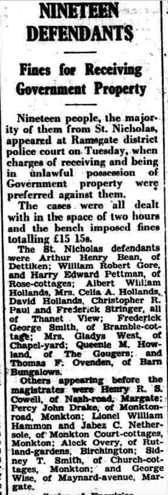
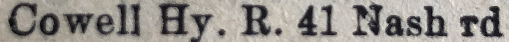
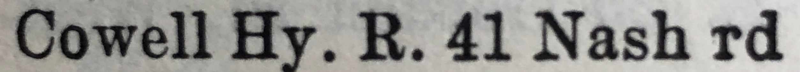
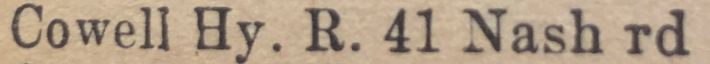

Henry Richard Stephen Cowell 1913 - 1984
[ Home ] | [ Calendar ] | [ Surnames Index ] | [ Family History ]A general laborer and the son of James Cowell (a seaman collier with the whitstable shipping company) and Emily Lawrence, Henry Cowell, (also known as Mick Cowell) the uncle of <a href="I1.html">Nigel Horne</a>, was born in Folkestone, Kent, England on Sep 28, 1913<span class="citation">1,2,3,4,5</span> and. He married Ethel Fagg (with whom he had 3 surviving children <a href="I282.html">Brian H</a>, <a href="I280.html">Mavis E</a> and <a href="I281.html">Alan Stephen</a>) at Holy Trinity Church, Margate, Kent, England on Oct 26, 1935<span class="citation">6</span>.</p><p>Henry spent all of his life in Kent, England. Throughout his life, he lived in several places around the county: at 7 Pouces Cottages, Minster, Thanet on Jun 19, 1921<span class="citation">1</span>; at 22 Church Square in Margate on Sep 29, 1939<span class="citation">2</span>; on Nash Road in Margate in 1944; and on 41 Nash Road in Margate in 1953<span class="citation">10</span>, in 1955<span class="citation">8</span>, in 1963<span class="citation">11</span>, in 1965<span class="citation">7</span> and in 1974<span class="citation">9</span>. <p>He died in Nov 1984 in Thanet, Kent<span class="citation">4</span>.
Parents
- James Frederick was born on Mar 2, 1887
- Emily Jane was born on Sep 30, 1887
Citations
- 1921 Census Of England & Wales - Findmypast (was age 7 and the son of the head of the household)
- 1939 Register - Findmypast (was the head of the household)
- England & Wales deaths 1837-2007 - Findmypast
- England & Wales, Death Index: 1984-2005 Online publication - Provo, UT, USA: The Generations Network, Inc., 2007.Original data - General Register Office. England and Wales Civil Registration Indexes. London, England: General Register Office. © Crown copyright. Published by permission of the Cont
- England & Wales, FreeBMD Birth Index, 1837-1915 Online publication - Provo, UT, USA: The Generations Network, Inc., 2006.Original data - General Register Office. England and Wales Civil Registration Indexes. London, England: General Register Office. © Crown copyright. Published by permission of the Cont
- England & Wales marriages 1837-2008 - Findmypast
- 1965 Kelly's Thanet Directory
- 1955 Kelly's Thanet Directory
- 1974 Kelly's Thanet Directory
- 1953 Kelly's Thanet Directory
- 1963 Kelly's Thanet Directory
Media
Henry Cowell - Ethel Fagg - marriage

Henry Cowell

Thanet Advertiser September 1, 1944

1965 Kelly's Thanet Directory

1955 Kelly's Thanet Directory

1974 Kelly's Thanet Directory

1953 Kelly's Thanet Directory

1963 Kelly's Thanet Directory

England & Wales deaths 1837-2007 - BMD/D/1984/11/74258835
1939 Register Transcription - TNA-R39-1755-1755D-017-27
England & Wales births 1837-2006 - BMD/B/1913/4/AZ/000312/074
England & Wales marriages 1837-2008 - BMD/M/1935/4/AZ/000270/034
1939 Register Transcription - TNA-R39-1755-1755D-017-26
Kent Marriages And Banns - GBPRS/CANT/MAR/011579/1
Family Tree

Generated by Ged2Site. Last updated on Jul 20, 2025